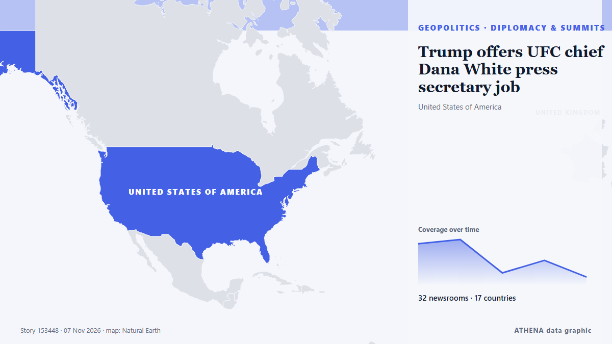

ATHENA Glaux Intelligence — Παγκόσμια ειδησεογραφική ανάλυση — κάθε αριθμός εξηγημένος
Κάθε είδηση, ελεγμένη σε πολλές χώρες.
Το ATHENA Glaux παρακολουθεί 634 ειδησεογραφικά μέσα σε όλο τον κόσμο. Μια είδηση γίνεται επαληθευμένο γεγονός μόνο όταν την αναφέρουν ανεξάρτητα μέσα. Κάθε γεγονός δείχνει ποιος το ανέφερε πρώτος και έναν βαθμό κινδύνου με τους λόγους του.
Αναφορές έρχονται από ανεξάρτητα μέσα — όταν δύο συναντηθούν στην ίδια ιστορία, γίνεται επιβεβαιωμένο γεγονός.
Τρεις τρόποι να διαβάσετε σήμερα
Ξεκινήστε από αυτόν που ταιριάζει στον χρόνο σαςΕπαληθευμένα γεγονότα
Κατά σειρά έκτασης της κάλυψης
- Israel president taps Eisenkot to form new government154 μέσα · 54 χώρεςΚίνδυνος 5.0
- Binance CFO is leaving to ‘pursue a new venture’ after $6.3 billion hack126 μέσα · 53 χώρεςΚίνδυνος 3.8
- After JD Vance, now Trump Jr blames Iran war for US midterms defeat83 μέσα · 39 χώρεςΚίνδυνος 7.1
- US strikes Iran’s Qeshm island – Report66 μέσα · 33 χώρεςΚίνδυνος 5.9
- Paraguay’s President Santiago Peña impeached and arrested50 μέσα · 32 χώρεςΚίνδυνος 7.4
Γραφείο Ανάλυσης
Κάντε μια ερώτηση και διαβάστε τεκμηριωμένη αξιολόγηση μιας βασικής είδησης, μαζί με το τι θα την διέψευδε.
Ανοίξτε το Γραφείο Ανάλυσης ›Πώς ελέγχει το ATHENA μια είδηση
- ΣυλλογήΟι αναφορές φτάνουν από ανεξάρτητα μέσα σε πολλές χώρες.
- ΑντιστοίχισηΌταν δύο μέσα συναντιούνται στην ίδια είδηση, γίνεται επαληθευμένο γεγονός.
- ΕξήγησηΚάθε γεγονός δείχνει ποιος ήταν πρώτος, πόσο εξαπλώθηκε και γιατί ο κίνδυνος είναι αυτός.

ΓεωπολιτικήTrump offers UFC chief Dana White press secretary job
President Donald Trump offered the job of press secretary to UFC president and CEO Dana White on Saturday. από CNBC World
Οι τίτλοι των ειδήσεων παρουσιάζονται στα αγγλικά, όπως δημοσιεύτηκαν.
Pope has voted in the midterms says Vatican
(ANSA) - ROME, 30 OTT - Pope Leo XIV has voted in the US midterm elections, the Vatican said Friday. από ANSA English
Paraguay’s Pena impeached over banking crisis
Santiago Pena had offered his resignation, but lawmakers pressed ahead with impeachment proceedings to strip him of the immunity granted to former presidents. από Free Malaysia Today

Binance CFO is leaving to ‘pursue a new venture’ after $6.3 billion hack
An on-chain tally puts the suspected Binance drain at $5.57 billion across three blockchains, as Tether and Circle froze $1.8 billion. από Decrypt
Israeli president picks Gadi Eisenkot, Netanyahu rival, to try to form government
Nov 7 (Reuters) - Israel's president on Saturday chose Gadi Eisenkot, Prime Minister Benjamin Netanyahu's strongest rival, to try to form a new government following a deadlocked election that left… από Al-Monitor
Italy foreign minister says he has been targeted by pro-Russian hackers over Ukraine backing
The attacks were also a reaction to efforts by the Foreign Ministry to strengthen cybersecurity, Tajani said. από The Straits Times
Γεωπολιτική, Πολιτική & Ασφάλεια
Περισσότερα ›US ‘Task Force Iron Gate’ in the works to restrict Iranian land commerce alongside naval blockade
After a months-long naval blockade on Iran, the US military has announced the establishment of a task force to bolster Washington’s efforts to restrict Tehran’s movement of advanced weapons systems… από Dawn
Οικονομία, Χρηματοοικονομικά & Αγορές
Περισσότερα ›Vietnam Morning Monitor: Centuries-old shipwreck off Hoi An to be displayed in museum, Nha Trang bans beach soccer citing tourist safety concerns
Vietnamese man arrested in $429,000 overseas home purchase scam. από Tuoi Tre News
- Μετοχές, ομόλογα & αγορές
James Bond Shocker: Robert Pattinson and Nicholas Hoult Late Contenders for 007 After Auditioning for Denis Villeneuve
- Τράπεζες & πίστη
Crisis-hit Paraguay impeaches Peña over bank crisis, replaces him with VP Alliana
- Τράπεζες & πίστη
China's giant pandas make public debut at US zoo
- Ανάπτυξη & δείκτες
Putin expands Japan Tobacco administration
Εμπόριο, Βιομηχανία & Υποδομές
Περισσότερα ›Two tankers strike mines in Strait of Hormuz: IRGC Navy
The Islamic Revolution Guard Corps (IRGC) Navy says two oil tankers attempting to navigate unauthorized routes through the Strait of Hormuz struck mines and caught fire. από Tehran Times
- Ναυτιλία & λιμάνια
US military says it disabled cargo vessel in Gulf of Oman
- Αερομεταφορές, σιδηρόδρομος & οδικές
Bolsonaro’s Escape From Brazil Was Aided by Milei Adviser at Argentine Airport
- Εμπόριο & εμπορικές συμφωνίες
US presses China to ‘immediately’ honor Busan trade commitments
- Ναυτιλία & λιμάνια
Strait of Hormuz will stay closed until US accepts its terms: Iran
Ενέργεια, Πόροι & Περιβάλλον
Περισσότερα ›20 injured as 5.7-magnitude earthquake strikes central Japan
TOKYO: An earthquake with a preliminary magnitude of 5.7 struck central Japan early today, injuring at least 20 people in Aichi Prefecture. από New Straits Times
- Πετρέλαιο & φυσικό αέριο
As COP31 comes to Turkey, satellites reveal a landfill methane problem
- Ακραία καιρικά & φυσικές καταστροφές
Heavy Rain Floods 70,000 Displacement Tents Across Gaza
- Ακραία καιρικά & φυσικές καταστροφές
Israel’s Arab Joint List warns of worsening Gaza crisis as floods swamp 70,000 tents
- Ρύπανση & βιοποικιλότητα
The Great Pacific Garbage Patch May Be Changing The Color of The Ocean
Τεχνολογία, ΤΝ & Κυβερνοασφάλεια
Περισσότερα ›Protesters storm site of Microsoft’s planned Amsterdam data centre
Activists in Amsterdam have stormed the site of a proposed Microsoft data centre. από Al Jazeera English
- Ρύθμιση τεχνολογίας
EU Accuses TikTok Over Harmful Rabbit Hole Feeds
- Κυβερνοασφάλεια
Hacked blood banks, breached supermarket fridges and plane bomb hoaxes: What’s going on in Europe?
- ΜΜΕ & παραπληροφόρηση
Weekly Roundup 06 November 2026
- Επεξεργαστές & υπολογιστική
US intelligence believes Nvidia CEO Jensen Huang had romantic ties with Chinese spy
Επιχειρήσεις, Εταιρείες & Επενδύσεις
Περισσότερα ›Pakistani astronaut to board Shenzhou 24 and become the first foreigner on China's space station
A Pakistani astronaut will board China’s Shenzhou 24 spacecraft as the first foreign national on Beijing’s space station. από ABC News (International)
- Αποτελέσματα & προοπτικές
Here’s How to Watch WWE Crown Jewel 2026 Live Online
- Εταιρική στρατηγική
Musk axes Tesla’s Cybertruck
- Αποτελέσματα & προοπτικές
Berkshire Hathaway more than doubles buybacks in third quarter as earnings decline
- Νεοφυείς & καινοτομία
After the US midterm rout of Trumpism, the world struggles to trust America again
Η σημερινή εικόνα
| 01:00 | 215 |
|---|---|
| 02:00 | 542 |
| 03:00 | 276 |
| 04:00 | 390 |
| 05:00 | 429 |
| 06:00 | 372 |
| 07:00 | 351 |
| 08:00 | 470 |
| 09:00 | 518 |
| 10:00 | 344 |
| 11:00 | 385 |
| 12:00 | 596 |
| 13:00 | 461 |
| 14:00 | 384 |
| 15:00 | 467 |
| 16:00 | 419 |
| 17:00 | 340 |
| 18:00 | 494 |
| 19:00 | 391 |
| 20:00 | 288 |
| 21:00 | 305 |
| 22:00 | 541 |
| 23:00 | 238 |
| 00:00 | 235 |
Κίνδυνος των σημερινών γεγονότων
Με την ευρύτερη κάλυψη
Αναδυόμενα σήματα
- Απότομη αύξηση · Ενεργό τώραKrakow
- Απότομη αύξηση · Ενεργό τώραUFC
- Απότομη αύξηση · Ενεργό τώραGulf of Oman
- Απότομη αύξηση · Ενεργό τώραCaspian Sea
- Απότομη αύξηση · Ενεργό τώραSonia Gandhi
Επίσημες προειδοποιήσεις
- Red notification for tropical cyclone FOUR-26. Population affected by Category 1 (120 km/h) wind speeds or higher is 1.156 million .Red · GDACS ·
- M 6.1 - Fiji regionM6.1 · USGS ·
- Cyber chief: UK facing AI-powered attacks on critical infrastructure within two yearsadvisory · UK National Cyber Security Centre ·
- M 6.0 - 165 km NW of Port-Olry, VanuatuM6.0 · USGS ·
Το ATHENA στο Telegram
Μπείτε δωρεάν στην ομάδα ATHENA Glaux και λάβετε τις ειδήσεις τη στιγμή που δημοσιεύονται εδώ:
- έκτακτα γεγονότα με κίνδυνο 6 ή περισσότερο
- ωριαία σύνοψη των κορυφαίων γεγονότων
- ενημερώσεις των παρακολουθήσεων κινδύνου (Ορμούζ, Ερυθρά Θάλασσα, Ταϊβάν, κυρώσεις κ.ά.)
- την ημερήσια ενημέρωση κάθε πρωί στις 10:00 (ώρα Ελλάδας)
- εβδομαδιαία προοπτική
- επίσημες προειδοποιήσεις, αναδυόμενα σήματα και κινδύνους σε άνοδο
Πατήστε το κουμπί, ανοίγει το Telegram, πατήστε «Join». Οι αναρτήσεις είναι στα αγγλικά· μπορείτε να τη σιγάσετε ή να αποχωρήσετε όποτε θέλετε. Δεν έχετε Telegram; Είναι δωρεάν στο telegram.org.
Παρακολούθηση κινδύνων
Περισσότερα ›Παγκόσμιοι κίνδυνοι — εβδομάδα 45, 2026 (2–8 Νοε) ›